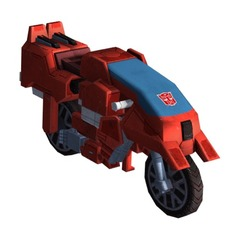

Афтербрейкер взрывной, злой и опасный... если вы поймаете его в плохом настроении. К сожалению, этот непостоянный персонаж может в один момент усердно заниматься продвинутой теоретической наукой, а в следующий момент впасть в ярость берсерка. Справедливости ради, его не так уж трудно вывести из себя, и он особенно ненавидит, когда ему отдают приказы. Вспыльчивый темперамент Афтербрейкера находит свое отражение в его манёвре пылающего мотоцикла, который может заманить врага в ловушку в пылающем кольце расплавляющего металл огня. Костяк команды техноботов помогает обуздать его зажигательный характер.
|  | Фракция | Автобот |
|---|
Флеймвор своенравна, мстительна и инфантильна. Она может затаить злобу в буквальном смысле на века, а её устранение зачастую берет верх над реальной миссией. Но в чем нельзя винить Флеймвор, так это в непоколебимой преданности делу Десептиконов, так что даже если она отвлечётся, то затем сразу возобновит свою миссию с тем же пылающим воодушевлением, что и раньше. У нее множество практического опыта, включая саботаж, шпионаж и научные исследования, а точность её огненного лука не имеет себе равных. По причинам, до сих пор не раскрытым, она странно ненавидит Арси.
| Фракция | Десептикон |
|---|
Создает кольцо огня, наносящее огненный урон и препятствующее врагам получать щит, и стреляет болтами электрического огня до 8 раз, отключающие и наносящие электр. урон.
| Уровень | Множитель урона |
Бонус |
|---|---|---|
| 1 | 1.8 | - |
| 2 | 1.872 | - |
| 3 | 1.944 | - |
| 4 | 2.016 | - |
| 5 | 2.088 | - |
| 6 | 2.16 | - |
| 7 | 2.232 | - |
| 8 | 2.304 | - |
| 9 | 2.376 | - |
| 10 | 2.448 | - |
| 11 | 2.52 | Отражает 50% урона обратно атакующим |
| Уровень | ⭐ ⭐ ХП/УВС |
⭐ ⭐ ⭐ ХП/УВС |
⭐ ⭐ ⭐ ⭐ ХП/УВС |
⭐ ⭐ ⭐ ⭐ ⭐ ХП/УВС |
|---|---|---|---|---|
| 10 | 763 / 30.0 | 1,000 / 34.7 | 1,240 / 41 | - |
| 20 | 1,220 / 48.1 | 1,610 / 55.7 | 1,990 / 65.9 | - |
| 40 | 3,150 / 124.0 | 4,150 / 143.5 | 5,140 / 169.6 | - |
| 60 | - | 9,490 / 328.4 | 11,700 / 388.1 | - |
| 65 | - | - | 14,400 / 477.3 | - |